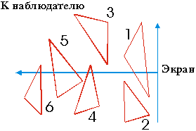
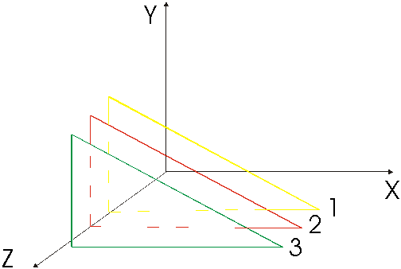
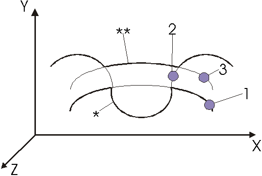

Лабораторная работа №6. |
АЛГОРИТМЫ УДАЛЕНИЯ НЕВИДИМЫХ ЛИНИЙ И ПОВЕРХНОСТЕЙ
Цель работы: изучить задачу удаления невидимых частей в трехмерной графике и алгоритмы ''плавающего горизонта"" Ньюэлла и Санча, выполнить исследование их характеристик.
- изучить теоретическую часть;
- получить задание, включающее виды алгебраических функций, описывавших поверхности, максимальное число совмещаемых в одном изображении поверхностей и максимальное число граней трехмерного объекта проектирования.
- выполнить с помощью программы ЗD-моделирования и САПР AutoCAD синтез изображения и удаление невидимых его частей, экспериментальная часть и исследовать качество и время решения, варьируя сложность ЗD - объектов - экспериментальная часть.
- оформить отчет;
- ответить на контрольные вопросы.
Список рекомендуемой литературы
Удаление невидимых линий и поверхностей (УНЛП) в трехмерных "сценах" является одной из наиболее сложных задач машинной графики. Оно устраняет неоднозначность интерпретации 3D - объектов проектирования САПР и улучшает их зрительное восприятие. Данная за-дача актуальна и для автоматизированного получения конструкторской документации при синтезе аксонометрических и ортогональных проекций объектов .
Известно целое семейство алгоритмов, отличающихся по таким критериям, как временная сложность, точность (разрешающая способность), использование так называемых объектного или экран-ного пространства, сложность программирования и др. Основное требование, предъявляемое к алгоритмам УНЛП - выявление всех видимых частей отображаемого объекта.
Большинство алгоритмов включает в качестве основной процедуры сортировку граней сцены по расстоянию до наблюдателя, и их эффективность в значительной степени определяется эффективностью сортировки (для лучших сортировщиков n элементов временная сложность, как известно, пропорциональна n log(n)).
В данной работе исследуются наиболее известные алгоритмы УНЛП - алгоритм Ньюэлла и Санча (чаще его называют по имени пер-вого автора) и алгоритм "плавающего горизонта".
Алгоритм Ньюэлла.
Его суть достаточно проста: если удалось упорядочить все грани трехмерной сцены по их удаленности от наб-людателя (первой считается самая удаленная грань), то сначала на экран выводится и закрашивается первая грань, затем - вторая, которая может частично закрыть первую, и т.д. Основная трудность реализации алгоритма Ныоэлла заключается в сортировке граней по расстоянию и определении пересечения последующих граней с предыдущими.
При сортировке учитывается расстояние до ближайшей точки каждой из граней рис .1.

Рис.1. Сортировка граней множества 3D - объеков.
Вторая задача решается в два этапа: во-первых, устанавливается факт пересечения граней, а во-вторых, если грани пересекаются, методами аналитической геометрии определяются линии пересечения.
В том случае, если последующая грань непрозрачна, то перекрываемая ею часть предыдущей грани закрашивается цветом последующей. Если грань прозрачна, то цвета комбинируется, что обеспечивает высоко реалистичность изображения.
Алгоритм "плавающего горизонта".
Его суть также проста: трехмерная сцена рассекается параллельными экрану плоскостями и определяется множество линий их пересечения с гранями рис .2.

К наблюдателю
Рис.2. Сечение трехмерной сцены плоскостями.
На каждой секущей плоскости анализируется видимость точек линий относительно линий на предыдущих, более удаленных от наблюдателя, плоскостях, изображение считается построенным после ана-лиза линий на последней, ближайшей к наблюдателю плоскости.
Для проверки видимости точки (Xj, Yj) на линии сечения по-верхности плоскостью J, относительно всех предыдущих плоскостей с номерами r<J-1 используется простой критерий: если Yj > Yk для всех k=1,J-1, то точка видна.
Однако на рис.3, на котором показаны проекции сечений Z=zk, некоторой поверхности плоскостями на координатную плоскость XOY, показан случай, когда участок линии для k = 2 (он отмечен "*") фактически виден, хотя Y-координаты его точек меньше, чем Y3.

Рис.3. Нижний (*) и верхний (**) плавающие горизонты.
В связи с этим введено понятие так называемого нижнего горизонта, т.е. линии сечения плоскостью k, который виден, если YI > YK, при i > k. Таким образом, для очередного k-го сечения существуют плавающие нижний и верхний видимые горизонты, давшие название алгоритму.
Преимущество алгоритма характерно для поверхностей, описыва-емых уравнениями вида F(x,y,z) =0, если линии сечений поверхнос-ти плоскостями также описывается уравнениями меньшей размерности, либо координаты точек на линиях сечений рассчитываются путем тривиальной подстановки.
Выполняется с помощью оригинальной программы трехмерного мо-делирования 3DESIGN, написанной на Си.
- Выбрать файл 3DESIGN.EXE и после отображения на экране кнопочного меню выбрать последовательно курсорам мыши кнопку "ЗD-дизайн" и кнопку меню "Проект".
- На падающем кнопочном подменю, после нажатая правой кнопки ввести с клавиатуры описание первой поверхности в виде уравнения Z=f (X,Y) с использованием основных тригонометрических и алгеб-раических функций (sin, cos, tan, log, exp, sqr, *, /, +, -). Программа осуществляет синтаксический анализ введенного уравнения поверхности и в случае ошибок выводит диагностическое сообщение.
- Повторить п.2 для других поверхностей.
- С помощью левых кнопок (лампочек) настроить отображаемое множество функций.
- Настроить параметры отображения (размер и видимость сет-ки, подозрение осей в аксонометрической проекции и их видимость, цветность изображения с помощью кнопок подразделов "Сетка", "Аксонометрия", "Оси", "График". При затруднениях использовать после выбора раздела кнопку "Помощь".
- Нажать кнопку "Построить", зафиксировав время начала построения множества поверхностей (см. таймер на пассивной кнопке "Время"). После этих действий программа графически отображает процент расчета изображения, а затем строит его в окне под кнопочным меню. Удаление невидимых линий поверхностей производится методом "плавающего горизонта".
- Изменяя вид и количество функций исследовать качество и временную сложность алгоритма УНЛП.
- Сформировать средствами 3D-ммоделирования САПР AutoCAD (например, выбрав пункт 3D -CONSTRUCTION падающего подменю DRAW и необходимую поверхность по графическому меню - " иконе") изображение, объекта исследования, аналогичного объекту программы 3DESIGN, и с помощью команды HIDE удалить невидимые линии. Иссле-довать качество и временную сложность УНЛП, варьируя число граней ЗD-объектов.
- Определить тип алгоритма УНЛП, реализованного в САПР AutoCAD.
- Выполнить для своего объекта УЛНП, используя программ D3D.
- Задание на проектирование.
- Результаты исследования алгоритмов УНЛП.
Контрольные вопросы
- Как формулируется задача УНЛП???
- Как классифицируются алгоритмы УНЛП???
- Чем определяется временная сложность алгоритма Ньюэлла???
- В чем заключается сходство и различие алгоритмов "плаваю-щего горизонта" и Ньюэлла???
- Какой из алгоритмов и почему предпочтительнее для проз-рачных объектов???
- Что такое "плавающий горизонт"???
Список рекомендуемой литературы
- Роджерс Д., Адамс Дж. Математические основы машинной графики. - Машиностроение, 1980.
- Аммерал Л. Машинная графика на языке C. В 4 - х книгах. - Сол Систем, 1992.
- Шикин Е. В., Боресков А. В., Зайцев А. А. Начала компьютерной графики. - Диалог - МИФИ, 1993.